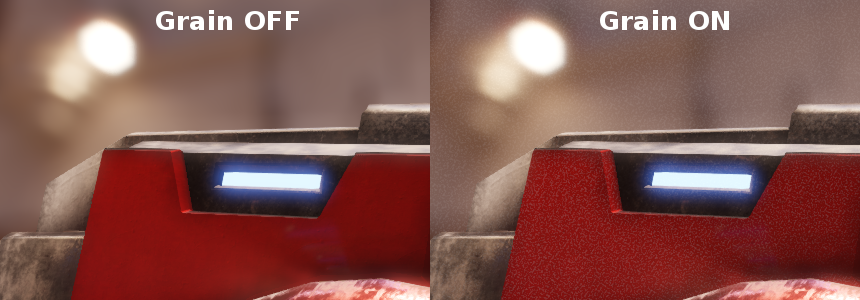
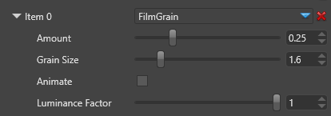

フィルム グレイン
初級 アーティスト プログラマー
フィルムグレイン（film grain） は、フレームごとにノイズを加えて、実際のカメラで使われているフィルムの粒子を再現します。

粒子パターンは自動的に生成され、フレームごとに変化します。
本物のフィルムグレインをシミュレートするために、ノイズは、光量が中程度の部分では目立って、明るい部分や暗い部分では目立たないようにする必要があります。
粒子パターンは、影響を受けるピクセルの輝度を局所的に変化させます。

プロパティ
| プロパティ | 説明 |
|---|---|
| Amount | エフェクトの量／強さ |
| Grain Size | 粒子のサイズ |
| Animate | 有効にすると、フレームごとに粒子パターンが変化します。 |
| Luminance Factor | オリジナルのピクセルの輝度がグレインパターンの影響をどれだけ強く受けるか。 |